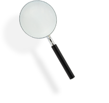
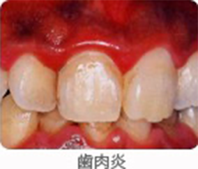
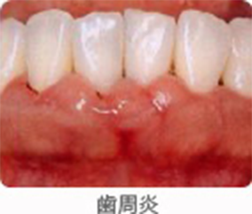
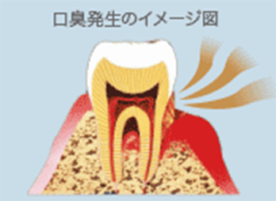

歯槽膿漏・歯肉炎とは？
これらをほうっておくと歯周病(歯槽膿漏・歯肉炎)へ進行するかも？
普段なんとなく感じているお口の不快感が、
実は歯周病に関連している可能性があります。


歯肉炎・歯槽膿漏とは
歯肉炎
歯肉のみに炎症が起きているもので、歯肉が赤く腫れてきたり、出血したりします。
歯垢の中には細菌がたくさんいて、その細菌がハグキに炎症を起こして歯肉炎が起こります。
歯槽膿漏(歯周炎)
歯肉炎が進行したもので、歯を支えている重要な骨が吸収されます。
さらに進行してゆくと歯を支えきれなくなり、歯がグラグラして最終的には歯が抜けることがあります。


歯周病の初期段階である歯肉炎の症状は、適切なケアで症状はおさまってきますが、歯槽膿漏の段階まで症状が進行すると、元の状態に戻ることはありません。
「痛みがないから…」といってそのままにしておくと、症状はどんどん進行していくため、日頃の予防が大変重要となります。
「痛みがないから…」といってそのままにしておくと、症状はどんどん進行していくため、日頃の予防が大変重要となります。
口臭、ネバつきの症状と発生のメカニズム
歯槽膿漏・歯肉炎、特有の症状として口臭、ネバつきがあげられます。
これは歯槽膿漏・歯肉炎の原因菌がお口の中でメチルメルカプタンという強いにおいの揮発性硫黄混合物を発生することでおこります。
また、原因菌（細菌）の活動が活発になるとその分泌物は、ネバつきの原因にもなります。
